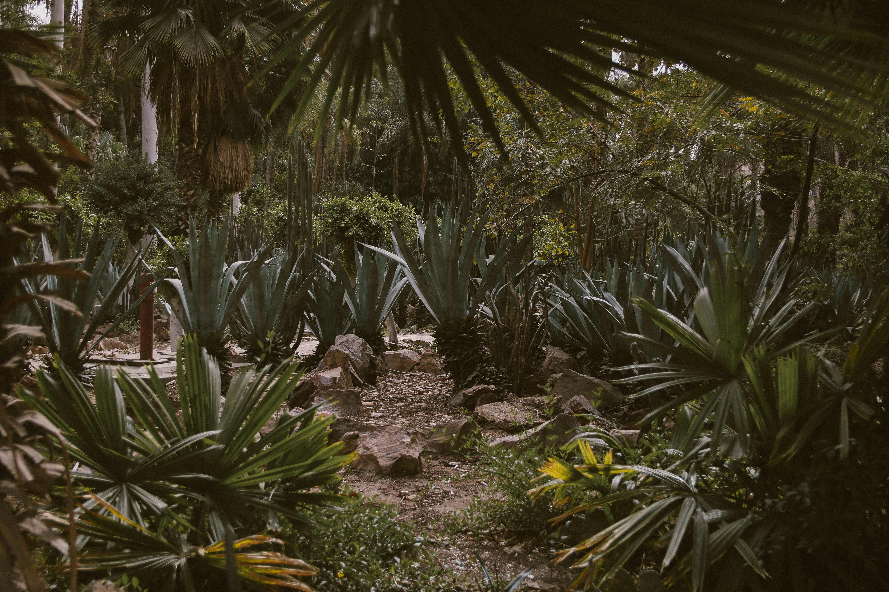

Jungle
Jungle
La jungle est une forêt dense et luxuriante, riche en biodiversité et caractérisée par une végétation épaisse et variée. Elle offre un habitat idéal pour de nombreuses espèces exotiques grâce à son climat chaud et humide.
Animaux
- Perroquet
- Tigre
- Singe

Savane
Savane
La savane est une vaste étendue herbeuse parsemée de quelques arbres et arbustes. Elle est connue pour ses saisons alternantes de pluies et de sécheresse, et elle abrite une diversité d'espèces animales adaptées à cet environnement.
Animaux
- Flamant rose
- Grue
- Lion

Marais
Marais
Le marais est une zone humide où l'eau douce est stagnante ou à écoulement lent. Il est souvent recouvert de végétation aquatique et sert de refuge à une faune diverse et abondante.
Animaux
- Crocodile
- Flamand rose
- Héron